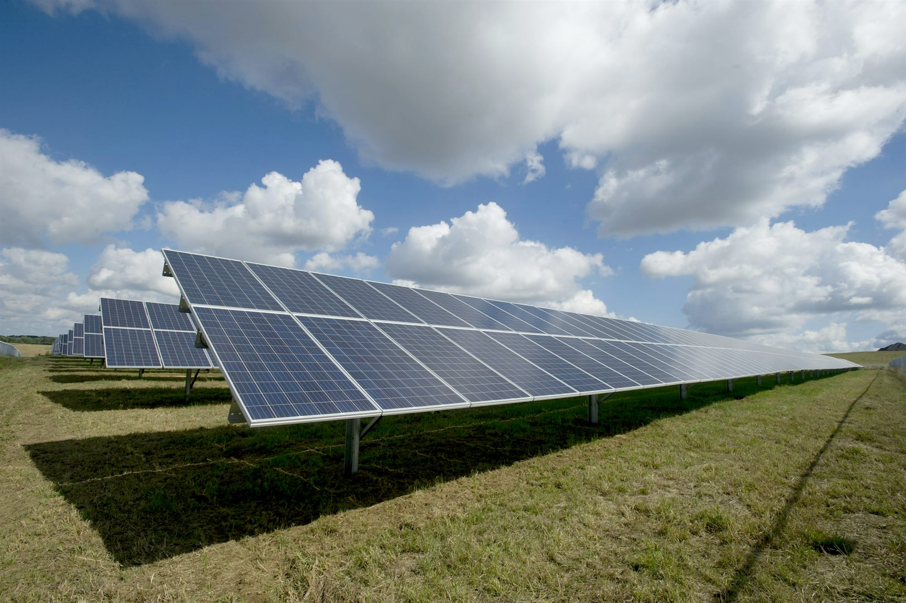
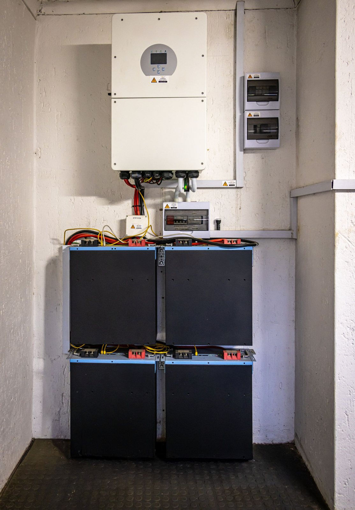
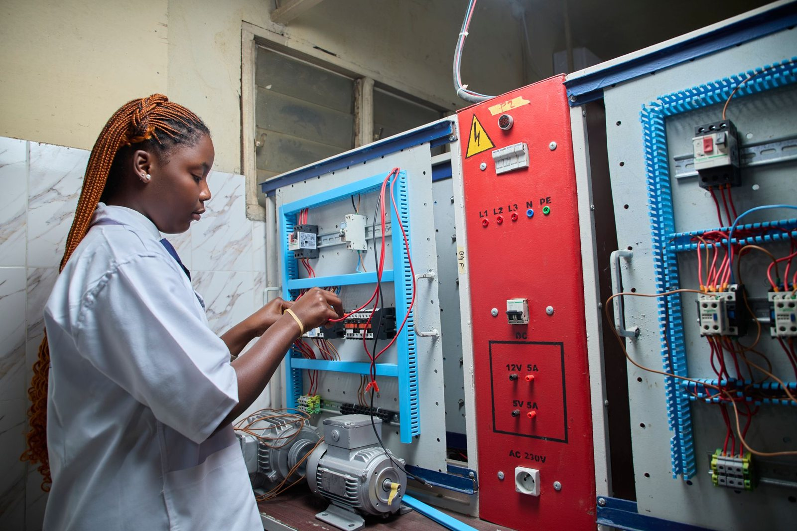
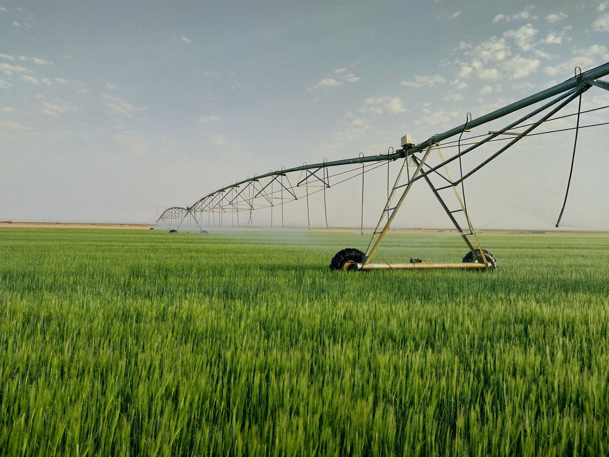

Nigeria's Energy Investment Landscape
Nigeria's energy landscape is undergoing a historic transformation. Driven by the Electricity Act of 2023, the nation is opening massive opportunities for private capital across generation, transmission, and storage solutions to power the continent's largest economy.
Leading the Nigeria Transition
“Our goal is to create a market-driven energy sector that is reliable, sustainable, and accessible to every Nigerian business and household. We invite global partners to join us in this defining chapter of our industrial growth.”

Solar
Nigeria's largest clean energy opportunity, driven by abundant sunlight and strong demand for reliable off-grid and embedded power solutions.
View project detailsWind
Nigeria's wind energy market is early stage but gaining policy momentum, with megawatts of untapped potential concentrated in the northern states.
View project details
Storage
Critical enabler for grid stability and renewable integration, unlocking reliable power supply through batteries and hybrid systems.
View project detailsSmall Hydro
A stable, site-specific renewable energy source delivering reliable baseload power from rivers and small water systems across Nigeria.
View project details
Green Mobility
Nigeria's green mobility market is in its early stages but moving fast, with growth led by electric two- and three-wheelers in major cities.
View project details
Energy Efficiency
The fastest and lowest-cost energy solution, reducing consumption, lowering bills, and improving system-wide power reliability.
View project detailsClean Cooking
Nigeria's clean cooking market is at an early but accelerating stage, with LPG, eCooking, and improved cookstoves expanding rapidly against a backdrop of critically low access across most of the country.
View project details
Bioenergy
Nigeria's bioenergy market is one of the most resource-rich and underleveraged opportunities in the country's clean energy transition, with feedstock from agricultural waste, municipal solid waste, and forestry residues available at scale and low cost.
View project details
Agriculture PUE
Nigeria's agriculture PUE market has moved past the pilot stage; farmers are already using solar irrigation, cold storage, milling, and agro-processing equipment to cut costs and grow incomes.
View project details
Green Hydrogen
An emerging frontier energy resource with long-term potential for industrial decarbonisation, export markets, and clean fuel production.
View project detailsNo sector matches that filter. Clear the field to see all ten.